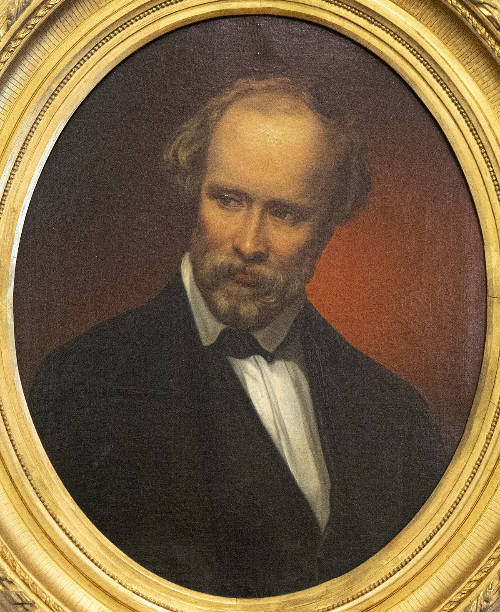
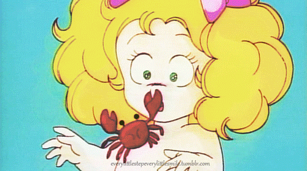

흔히들 인간을 사회적 존재라고 합니다.
우리는 서로 관계를 통해서 에너지를 얻고 행복을 얻곤 하죠.
하지만 항상 행복과 에너지를 얻는 것은 또 아닙니다.
때로는 외롭고, 때로는 쓸쓸하고, 때로는 고독한 인생.
마음대로 되지 않는 인생인 만큼, 쉽지 않은 인생인 만큼
살아가는 재미와 의미가 존재하는 것 아닐까요?
이번 별에서는 외로움과 쓸쓸함, 고독에 대해서 살펴보겠습니다.
“내 마음은 쓸쓸한 거리 비추네...”
[가로등]-김은호
“왜 그러는 것일까?
고독하기 때문이다.
왜 고독할까?
자신을 제대로 사랑하지 못하기 때문이다.”
[프리드리히 니체]
“인생은 고독, 그것이다. 왜냐하면 인생은 남을 잘 모르기 때문이다.”
[헤르만 헤세]
"참말로 고독하구만
이젠 내 주머니는 두둑하지만
정말 참말로 고독하구만
오 이런, 뭐 이런, 또 이런"
[고독하구만]-머쉬베놈
"우리는 모두 한 곳에 모여 북적대며 살고 있다.
그러나 우리는 너무나 고독해서 죽어 가고 있다."
[알베르트 슈바이처]
"순간적인 기쁨을 나누는 친구가 아무리 많아도 고독으로 인한 상처는 쉽게 치유되지 않을 것이다.
자신을 진정으로 사랑하기 위해서는 먼저 무엇인가에 온 힘을 쏟아야 한다.
자신의 다리로 높은 곳을 향해 걸으면 고통이 따르지만, 그것은 마음의 근육을 튼튼하게 만드는 고통이다."
[프리드리히 니체]
"서운하다. 서운하네. 서운해."
[김찬호(인터넷 방송인)]

"Leben heißt, tief einsam sein
산다는 것은 깊은 고독 속에 있는 것이다."
[젊은이들에게]-크리스티안 프리드리히 헤벨

"외로워도 슬퍼도 나는 안울어
참고 참고 또 참지 울긴 왜 울어
웃으면서 달려봐 푸른들을
푸른 하늘 바라보며 노래하자
내 이름은 내 이름은 내 이름은 캔디
나 혼자 있으면 어쩐지 쓸쓸해 지지만
그럴 때 얘기를 나누자 거울속의 나하고
웃어라 웃어라 웃어라 캔디야
울면 바보다 캔디 캔디야"
[들장미 소녀 캔디]-여는노래
"Laugh, and the world laughs with you
weep, and you weep alone
웃어라, 온 세상이 너와 함께 웃을 것이다.
울어라, 너 혼자만 울게 될 것이다."
[Solitude(고독)]-엘라 휠러 윌콕스
"하나님이 내 친구 되시는데 어떻게 외로울 수가 있을까요?"
[주일 설교 말씀 중에서...]
"子曰 德不孤라 必有隣이니라.
공자가 말하였다. 덕(德)은 외롭지 않고 반드시 이웃이 있다."
[공자]
다음으로 가길 원하신다면, 두번째 문제입니다.
김은호는 어느 나라에서 더 오래 살았을까요?